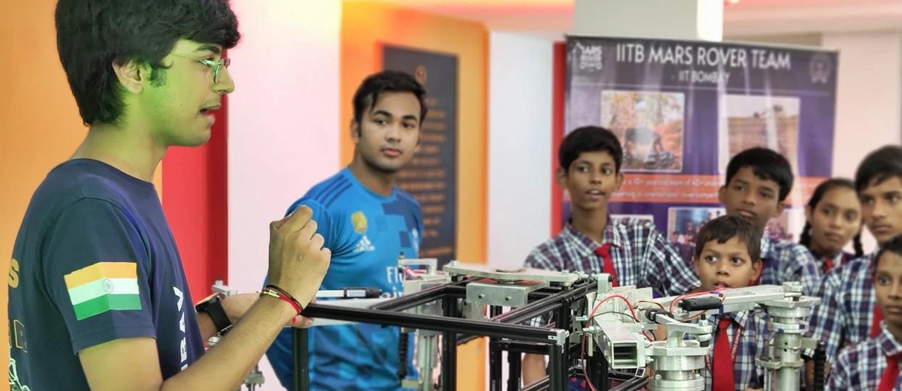

1,60,000
children
27
States
The Right to Education (RTE) Act which came into force in 2010 made education free and compulsory for all children in the age group of 6-14 years. However, more than a decade later, the learning curve has not been steady for all children. The socio-economic conditions of parents and gaps in the learning infrastructure and environment in schools are hindrances which prevent many children from getting a proper education. The National Education Policy (NEP) of 2020 has introduced some welcome and progressive changes that are positioned to make India’s education system more inclusive and holistic.
Smile Foundation’s education interventions are focused on helping children from difficult circumstances to have access to equal opportunities for school completion and equitable learning outcomes. Aligned to the NEP, the initiatives are also in line with the key priority areas identified during the G20 Education Working Group meeting (2023), including foundational literacy & numeracy, tech-based learning, building capacities, and strengthening research & promoting innovation.
Smile Foundation’s education interventions are focused on helping children from difficult circumstances to have access to equal opportunities for school completion and equitable learning outcomes. Our programmes are aligned to the National Education Policy and aim to support the efforts of government to enhance accessibility of quality education for all children.
Child-Centric: The program focuses on enhancing students' learning experiences and outcomes by providing access to diverse educational content, promoting a conducive learning environment, and ensuring socio-emotional well-being through counseling support.
Teacher-Centric: Continuous professional development for teachers is a key focus, with training on modern teaching methodologies, classroom management, and effective use of technological and infrastructural resources.
Enabling Learning Environment: The program works to create a supportive and inclusive learning environment. Initiatives include installing solar panels for sustainable energy, refurbishing school facilities like toilets, and promoting language learning through tools.
Engaging Community: Community engagement is encouraged to foster ownership and involvement in school operations and student learning. This is facilitated through parent-teacher meetings, school management committees, and parent groups like the mothers’ associations.
Teaching learning materials comprising of notebooks, textbooks, practice sheets, classroom teaching materials, stationery and writing sheets were provided to students. STEM Labs and Language Labs were established, and DIY activity kits and Math learning tool kits were distributed at centres across India. Health, hygiene & well-being sessions were conducted for children and adolescents on general hygiene, menstrual hygiene, importance of clean water and sanitation, healthy eating and overall health growth and development, along with provision of nutritious food for students for improved learning outcomes.
86 teacher training sessions aimed to empower educators with the necessary tools and techniques to create an engaging and supportive learning environment were conducted. To foster better educational outcomes for students, s the sessions were designed to make classrooms more interactive, vibrant, and engaging, and benefited 482 teachers and 116 principals. Key focus areas included Activity-Based Learning, Foundational Literacy & Numeracy, Innovations in STEM, Classroom Management & Child Pedagogy, Lesson Planning and Effective Delivery of Curriculum, and Stakeholder Management.
Creating an exciting and fun learning environment significantly enhances positive and energetic interactions among students, enabling them to understand and retain concepts more effectively. The highlights of this initiative include the establishment of digital classrooms, infrastructural improvements such as installation of drinking water facilities, furniture for classrooms, CCTV, waterproofing and plumbing, implementation of BaLA Artwork to support visual learning, and provision of sports equipment and musical instruments to encourage physical activity and creative expression among students.
The Mission Education program has embraced innovative approaches to enhance learning experiences, particularly in STEM, activity-based, and technology-driven education. Emphasis on STEM (Science, Technology, Engineering, and Mathematics) activities and methodologies has been a core focus. These activities encourage students to think critically, solve problems through inquiry and logic, and foster creative ideation. This approach not only builds a scientific temperament but also inspires students to be curious and find solutions to real world problems.
The programme addresses challenges related to the digital divide by providing technological resources and training to both students and teachers. It emphasizes the responsible use of technology, including data privacy and cyber safety, ensuring a safe and secure digital learning environment. To facilitate digital learning, the programme invested in sustainable infrastructure, including installing solar panels to provide electricity. This initiative promoted an eco-friendly and energy-efficient learning environment, including provision of solar panels, smart classes, smart TVs, English learning software, and educational tablets.
Vocational training elements were introduced to provide students with practical skills beyond the traditional curriculum in Organic Farming, Organic Products, Recycling and Upcycling, Basic Repair and Maintenance Skills. This exposure helps students connect different areas of learning and prepares them for future career opportunities. A holistic learning experience equips students with critical thinking skills, practical knowledge, and a broad perspective, nurturing well-rounded individuals ready to contribute to their communities and beyond. Emphasis was paid on sports, music & arts.
Conducted workshops on electronics, mechanics, coding, and bot making for over 200 students
Supported STEM labs setup, DIY kits, teacher training, and facilitated STEM workshops and digital video libraries
Held free bootcamps on app development, 3D modeling, virtual reality, and assessments for hands-on learning
Focused on capacity building for teachers and students, enhancing educational delivery and engagement

Conducted study to identify gaps in integration of Atal Tinkering Labs in Govt schools, and training of teachers to maximise benefits
Offered exclusive integrated Mathematics learning program, presenting concepts using concrete material
Provided students with free access to BYJU’S Premium App for online studies and reference
Provided AI based English language learning software to improve students’ reading and comprehension skills
Provided DIY kits, Math Tool kits, STEM & Math labs setup, and STEM classroom programmes
Provided tablet-based interactive learning solutions, enhancing the digital learning experience
Supported the development of assessment tools for identifying learning gaps and aiding education recovery
Installed ReadToMe software to improve reading and comprehension capabilities among students
Workshops in robotics, aero-modeling, tinkering lab, 3D printing, energy, and astronomy are designed and facilitated by IIT
At Smile Foundation, we believe that education is the most powerful tool for transforming lives. Through our scholarship programs, we aim to bridge the gap between dreams and opportunities for students from underserved communities. These scholarships provide financial support that allows deserving students to focus on their studies, pursue higher education, and reach their full potential—without the burden of financial constraints. By fostering a culture of merit and inclusion, we are helping to create a generation of leaders who will drive positive change for years to come.
Financial Assistance:We offer scholarships for the four-year duration of the engineering course, covering the tuition fee and ensuring that economic constraints do not impede their academic progress.
Learning Tools: Each scholarship recipient is provided with a laptop and other essential resources, ensuring that they have the technology required for online learning and research.

Employability Skills: The programme provides training in employability and communication, and internships to equip scholars with the skills required to not just graduate but to thrive in the competitive world.
Industry Exposure: Smile Foundation helps students visit the sites, offices, and different departments of potential employers based on their interests, education, and industry needs.
Domain Skills: Scholars are also provided with domain/technical skills training based on industry needs and in alignment with their chosen fields in the second year of the course.
Placement Assistance: Our scholarship programme provides placement assistance in the fourth year of the course and helps the scholars with aptitude tests, mock tests, and mock interviews.
"I am the first in my family to dream this big, and it’s not easy. I am a second-year engineering student, staying in a hostel, far from home. I miss the comfort of my mother’s cooking and the sound of my brother’s laughter. But this distance is necessary—it’s a part of my journey. I remind myself of why I’m here every time I feel alone. My father works long, grueling hours as an electrician, and my mother, a homemaker, silently juggles our household on a tight budget. Their sacrifices drive me. I scored 84% in my class 12 exams, and that opened doors. But it’s the scholarship from Smile Foundation that makes it possible for me to stay here and study. Without it, my dreams would be just that—dreams, out of reach. I want to become a software developer, and give them the life they never had—a life where they can live without worry."
"An auto driver’s daughter topping the board exams made for an inspiring story in the headlines. My name is Sakshi and I’m currently studying computer engineering. I come from a family of five and we live in a small one-room kitchen that doesn’t quite fit our dreams. However, growing up, I always dreamt of living in a tall building in Mumbai from where I could see the world. To make this dream come true, I promised myself that I would study hard and achieve everything to give my family a better life. The scholarship from Smile Foundation brought me one step closer to my dreams. My goal is to secure a good job and build a strong career trajectory. Although I face many challenges, such as a lack of electricity, space to study, and a less than-ideal living situation, I know that when I look back on this time in the future, I will feel humble and proud of my success."
"My parents work as daily laborers, doing whatever jobs they can find to support our family. Our home is fragile—whenever the wind blows hard or a storm comes, it feels like it might fall apart. It barely keeps us safe from the rain and cold, and I can see the worry on my parents’ faces. Neither of them ever got the chance to go to school. But no matter how hard things get, they always encourage me to study. I love learning, and I dream of becoming a teacher one day. I also love to sing and dance, it makes me feel free, even when things are tough. My parents say that my dreams keep them going, and I hope that one day, I can make them proud and give our family a better life."
"For the last three months, no one in our community has had regular work. I see my father leave home, traveling far to different cities, hoping to find a job. Sometimes he stays if he finds work, but if not, he comes back, looking tired and worried. My parents tell us that if we study well, we can become—a doctor, an engineer, a teacher. They believe that one day, we can help others too. Sunny and I go to the learning center every day. We enjoy studying and want to do something big when we grow up. More than anything, I want to see my parents happy and give them a life without worries."